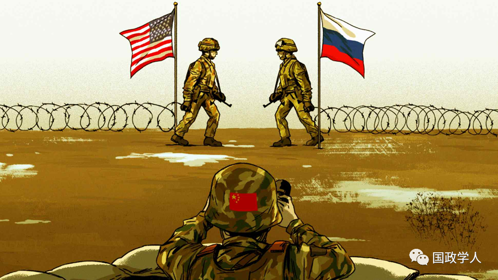

收录于合集

导读
2022年5月2日，清华大学文科资深教授、国际关系研究院院长阎学通在世界著名国际关系杂志《外交》（ Foreign Affairs ）发表重磅评论，探讨面临乌克兰难题，中国为何应在俄乌战争中选择中间道路。阎学通教授指出，一方面，中国在俄乌战争中陷入了一种战略困境，给中国带来了许多压力。另一方面，中国清楚美国在俄乌问题上拖垮俄罗斯的战略目标。不论中国是否支持俄罗斯，美国对华遏制的整体战略都不会改变。所以，中国只能坚持平衡策略，延续和平发展道路，避免因选边站队而带来重大风险。国政学人特编译此文供读者思考，文章观点不代表本平台观点。

**
**
俄乌战争发生以来，中国陷入了一种战略上的困境。一方面，俄乌冲突不仅中断了价值数十亿美元的中国对外贸易，还加剧了东亚的紧张局势。中国人对这场战争的态度不同，分歧较大。另一方面，中国指责冲突的根源在美国，正是美国支持北约的扩张才激怒了俄罗斯，同时也担心美国有意延长俄乌冲突以此拖垮俄罗斯，加入国际社会谴责俄罗斯的行列对中方没有什么好处。
不管中国如何回应俄罗斯总统普京发动的乌克兰战争，美国都不太可能放松遏制中国的整体战略。 作为中国最大、军事能力最强的邻国，俄罗斯不是中国希望对抗的大国。因此，中国的决策者尽量避免不必要的挑衅。中国的做法是在有关谴责俄罗斯的联合国大会(UN General Assembly)的投票上弃权，并在关于俄乌问题的官方声明中采取谨慎立场。
中国的平衡策略是有代价的。 外交上，由于中国拒绝谴责俄罗斯，中国与一些邻国关系紧张起来，并疏远了许多反对俄罗斯发动战争的发展中国家。经济上，中国还要承受长时间因俄乌战争带来的损失。为了最大限度地减少战略损失，中国还是会坚持走这条中间道路，直到乌克兰战争结束。只有美国为台湾宣称法理上的独立提供军事支持，才有可能改变中国的战略考虑。而且此举将把中国推向俄罗斯的一边，否则中国还是会继续采取平衡策略。实际上，只要美国对中国的遏制战略不变，中国就很难在俄乌问题上站在美国的一边。
1
美国试图将中俄绑定
自冲突开始以来，西方大国一直指责中国消极甚至积极地支持俄罗斯在乌克兰的军事行动。 例如，今年3月，《纽约时报》(The NewYork Times)报道了未经证实的说法，称俄罗斯在冲突前已告知中国其战争计划。但正如中国驻美大使秦刚3月15日在《华盛顿邮报》（WashingtonPost）的一篇专栏文章中指出的那样，俄罗斯的行动会让中国损失惨重：“当前有6千多名中国公民在乌克兰居住，中国是俄罗斯和乌克兰最大的贸易伙伴，也是世界上最大的原油和天然气进口国。俄乌冲突对中国没有好处。假如中国知道危机迫在眉睫，我们一定会尽最大的努力阻止冲突的发生。”
事实上，这场战争对中国的负面影响还是很大。 这场冲突扰乱了大宗商品市场、中断了供应链，给中国企业造成了数十亿美元的损失。如中国镍业巨头青山控股集团就因战争引发的镍价飙升而损失了80亿美元。战争也导致了中国出口订单被大规模取消，从而削弱了中国的工业生产力。据国家统计局的数据，跟踪制造业经济活动的中国制造业采购经理人指数（PMI）在3月份下降了0.7%，比市场预期要低得多，这也是自2021年8月以来首次出现月度收缩。
这场战争也加剧了中国和一些邻国之间的紧张关系。随着中美之间的竞争加剧，许多东亚国家采取对冲策略以平衡与中美两个大国的关系，但乌克兰的冲突迫使其中一些国家更倾向于美国。 此外，这场冲突也让美国有理由批准向台湾提供另一笔9,500万美元的军事援助，这是美国总统拜登上台以来，台湾收到的第三笔美国军售援助。受影响的不仅是中国与邻国的关系。今年3月，三分之二的联合国成员国在联合国大会(UNGeneral Assembly)的两项决议中投票谴责俄罗斯，只有5个国家投了反对票，35个国家投了弃权票。许多中小国家，尤其是发展中国家，可能会认为中国做得不够（没有谴责战争的发动方俄罗斯）。更糟糕的是，这场战争进一步加剧了中国与美国及其盟友之间的紧张关系。澳大利亚、加拿大、日本和英国都表示，他们将加入美国的行列，继续对与俄罗斯开展业务的中国公司实施二级制裁。
最后，乌克兰战争加深了中国内部政治立场的分歧。 在微信和其他社交媒体平台上，网络上形成了支持和反对俄罗斯的两种观点。例如，冲突开始后不久，一些中国网民重提历史上沙俄对中国的侵略。
2
美国在俄乌冲突上“火上浇油”
尽管战争给中国带来了不少负面影响，但中国并不准备接受美国处理冲突的方式。 自冲突开始以来，中国政府一直认为，美国极力推动北约东扩是对俄罗斯安全底线的挑衅，是美国有意让战争升级，从而达到削弱俄罗斯和中国的目的。3月5日，中国外交部长王毅在与美国国务卿布林肯的电话中表示，中方反对任何在乌克兰“火上浇油”的行为。此后，中国领导人和记者不断重复这一说法，强调中国对美国意图的不信任感。央媒《人民日报》于3月30日发表社论，认为美国“火上浇油是为政治解决这一危机制造更大的障碍。”
战争发生之前，美国向俄罗斯施加了严厉的经济制裁，但都未能阻止俄罗斯发动战争，于是美国将其目标从结束冲突转变为延长冲突。 3月26日美国总统拜登访问波兰的一次演讲中说：“这场战争不会在几天或几个月内取得胜利。我们需要为未来的长期斗争而坚强起来。”在中国看来，拜登这番话是在承认白宫的目标不再是结束战争，而是延长战争，意欲以此削弱和击败俄罗斯。在接下来的一周，俄乌双方的谈判代表在一项临时和平计划方面取得了进展时，美国的高级官员旋即对此表示怀疑。俄罗斯方面表示会考虑减少对基辅和切尔尼戈夫州等地的军事攻击。而关于进展的回应，拜登表示：“在我看到（俄罗斯）的行动之前，我不会做任何解读。”第二天，他告诉乌克兰总统弗拉基米尔·泽连斯基（Volodymyr Zelensky），美国计划再向乌克兰提供5亿美元的直接预算援助。在中国看来，美国扩大对乌克兰的军事援助，是为了让俄罗斯无法获得撤军的外交途径和理由。美国国防部长劳埃德·奥斯汀（LloydAustin）上周表示：“我们希望看到俄罗斯弱化到无法再次入侵乌克兰。”这类行为和声明让中国更加相信，美国的首要目标是削弱俄罗斯，而不是寻求迅速结束这场战争。
中国不相信，在乌克兰战争问题上寻求与美国的共同立场后就能够让宏观上的中美关系得到改善。 即使中国加入国际社会对俄罗斯谴责的队伍，美国也不会减轻其对中国的遏制战略。俄乌战争开始后，一些东亚国家曾公开质疑，在欧洲陷入危机的情况下，美国是否会继续将注意力放在印太地区。对此拜登政府迅速回应了东亚国家的疑虑。3月28日，美国国防部副部长凯瑟琳·希克斯（KathleenHicks）告诉记者：“即使我们面对俄罗斯的邪恶行动，国防部也做好了紧急预案以维持和加强对中国的军事威慑。中国仍是我们最重要的战略竞争对手和挑战。”第二天，拜登对新加坡总理李显龙(LeeHsien Loong)说，尽管美国正关注着乌克兰，美国同时也能“强有力地支持并迅速实施印度-太平洋战略”。
中国政府认为，即使中国与俄罗斯保持距离，美国也不会以其他方式改变印太战略。 在中国看来，公开谴责俄罗斯或支持对俄罗斯实施制裁，只会为美国打开对中国实施二级制裁的大门。美国已经威胁要惩罚与俄罗斯做生意的中国公司了。2月3日，美国国务院发言人内德·普莱斯（Ned Price）就曾对记者表示：“如果我们看到包括中国公司在内的外国公司阻碍美国的出口管制措施，我们将有一系列工具进行反制。”
在俄罗斯军队越过边境进入乌克兰境内后，美国曾对中国施加了外交压力。 3月中旬，在美国国家安全顾问杰克·沙利文（Jake Sullivan）会见中国中央外事工作委员会办公室主任杨洁篪之前，他曾告诉媒体：“我们私下曾与中方沟通，中国要为帮助俄罗斯躲避大规模制裁负责。”
3
中国坚持走中间道路
这不是中国第一次夹在两个竞争对手间。 1958年至1971年，中国面临历史上最恶劣的国际环境。在那期间，中国不得不同时面对来自美国和苏联的战略威胁。作为回应，中国投入了所有的经济资源，准备对这两个大国中的一个发动全面战争。为了更好地保护其工业基地免受攻击，中国将许多工厂从东部较发达的地区转移到不发达的西部山区，并将工厂隐藏在人工洞穴中。那次大规模的产业重组使中国陷入了严重的经济困境，造成了严重的商品短缺和大范围的贫困问题。
过去惨痛的教训影响了中国对俄乌战争的看法，更加坚定了中国要避免再次被夹在美国和俄罗斯（前苏联）之间。 为避免激怒俄罗斯，中国的官方声明经过了精心推敲。例如，在今年3月的一次采访中，秦刚明确表示，中国寻求与俄罗斯建立合作关系，但不支持其在乌克兰的战争。他说：“中俄之间的合作没有禁区，但也有一条底线，那就是《联合国宪章》确立的原则。”在4月1日的新闻发布会上，中国外交部欧洲司司长王鲁彤的说法同样是走中间路线：“我们不做任何事情来刻意规避由美国和欧洲对俄罗斯施加的制裁，中国不是乌克兰危机的参与方。”
在乌克兰问题上，中国选择了一条中间道路，没有向莫斯科提供军事援助，但与俄罗斯保持着正常的商业关系。 美国的战略伙伴印度也采取了类似的立场，明确地区分与俄罗斯的在军事和经济上的事务。部分北约国家为供民众过冬取暖，也继续购买俄罗斯的天然气。如果乌克兰战争继续下去，将会更多的国家效仿中国的平衡策略，以最大限度地减少战争给本国造成的经济损失。
作为世界第二大经济体，中国打算在塑造全球经济规范方面发挥重要作用，但无意在全球安全事务尤其是战争方面中发挥主导作用，毕竟中国与美国在军事上存在巨大差距。营造有利于中国经济发展的和平环境仍然是中国外交的重要目标。只要美国不为台湾在法理上宣告独立提供军事支持，中国是不可能偏离和平发展这条道路的。
作者： 阎学通，清华大学文科资深教授、国际关系研究院院长。
译者： 黄紫蓝，国政学人编译员，悉尼大学国际关系硕士，香港中文大学（深圳）全球与当代中国高等研究院研究助理。
点击左下角可看原文，文章观点不代表本平台观点